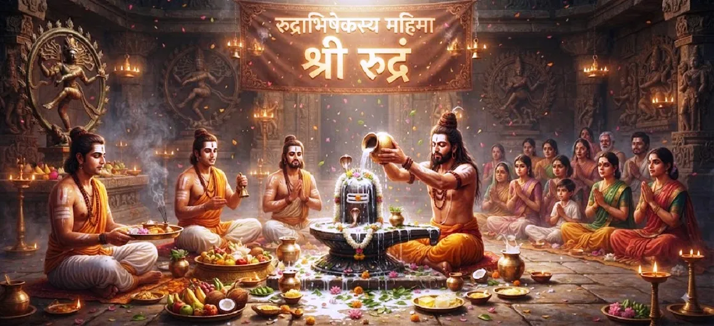

रुद्राभिषेक का माहात्म्य
कोटिरुद्र संहिता का उनतीसवां अध्याय भगवान शिव को रुद्राभिषेक करने के गहन आध्यात्मिक महत्व, अनुष्ठान की महिमा और असीम कृपा का खुलासा करता है।
शुद्ध भक्ति की खोज के बाद, यह अध्याय दर्शाता है कि कैसे पवित्र पदार्थों और वैदिक मंत्रों के साथ शिवलिंग का स्नान सभी पापों को साफ करता है और उच्चतम आकांक्षाओं को पूरा करता है।
यह पवित्र शिव पुराण में सबसे प्रतिष्ठित अनुष्ठान व्याख्याओं में से एक है।
अध्याय 29 की मुख्य बातें
पवित्र अनुष्ठान
आनुष्ठानिक स्नान (अभिषेक) का सर्वोपरि महत्व
वैदिक मंत्र
शक्तिशाली श्री रुद्रम भजनों के माध्यम से रुद्र का आह्वान।
पवित्र प्रसाद
दूध, शहद, घी और दिव्य द्रव्य भक्तिपूर्वक प्रवाहित किये गये।
कर्म शुद्धि
जीवन भर की संचित नकारात्मकता को धोना।
उपचार शक्ति
शारीरिक स्वास्थ्य और भावनात्मक संतुलन बहाल करना।
परम मुक्ति
ब्रह्मांड के ब्रह्मांडीय स्वामी के साथ मिलन प्राप्त करना।
इस अध्याय में मुख्य विषय
- 01रुद्राभिषेक की परिभाषा एवं महत्व→
- 02श्री रुद्रम और चमकम की शक्ति→
- 03पवित्र तरल पदार्थ और उनके अद्वितीय आशीर्वाद→
- 04उपासना की उचित विधि एवं मानसिक दृष्टिकोण→
- 05गहरे कर्म संबंधी पापों की सफाई→
- 06रोग और संकट का निवारण→
- 07अशुभ ग्रहों के प्रभाव को शांत करना→
- 08धार्मिक भौतिक इच्छाओं की पूर्ति→
- 09आध्यात्मिक उन्नति और भक्तिमय आनंद→
- 10अध्याय 30 की ओर →
रुद्राभिषेक की परिभाषा एवं महत्व
रुद्राभिषेक को भगवान शिव की पूजा के उच्चतम रूप के रूप में वर्णित किया गया है, जो उनके रूद्र रूप में हैं, जो भयंकर लेकिन दयालु गर्जना करते हैं जो सभी अस्तित्व संबंधी भय को दूर कर देते हैं।
पवित्र प्रसाद की निरंतर धाराओं के साथ लिंग को स्नान कराना भक्त की आत्मा में दिव्य कृपा के निरंतर प्रवाह का प्रतीक है।
श्री रुद्रम और चमकम की शक्ति
अध्याय अनुष्ठान के दौरान श्री रुद्रम के वैदिक भजनों का जाप करने पर जोर देता है। प्रत्येक शब्दांश महादेव की ब्रह्मांडीय आवृत्ति के साथ प्रतिध्वनित होता है, जो अनुष्ठान स्थल को शुद्ध प्रकाश के मंदिर में बदल देता है।
चमकम सभी धार्मिक मानवीय आवश्यकताओं की पूर्ति का आह्वान करता है।
पवित्र तरल पदार्थ और उनके अद्वितीय आशीर्वाद
अभिषेक में उपयोग किए जाने वाले विभिन्न पदार्थ अलग-अलग वरदान लाते हैं: दूध दीर्घायु और पवित्रता देता है, शहद मिठास और वाक्पटुता लाता है, घी आध्यात्मिक चमक प्रदान करता है, और गन्ने का रस धन और खुशी लाता है।
जल मन की सभी अशुद्धियों को साफ कर देता है।
उपासना की उचित विधि एवं मानसिक दृष्टिकोण
पाठ में कहा गया है कि बाहरी चढ़ावे के साथ आंतरिक शुद्धता, गहरी एकाग्रता और पूर्ण समर्पण होना चाहिए ताकि यह सुनिश्चित हो सके कि अभिषेक अपना पूर्ण आध्यात्मिक प्रतिफल दे।
डाली गई प्रत्येक बूंद प्रेम का कार्य है।
गहरे कर्म संबंधी पापों की सफाई
जिस प्रकार पानी बर्तन की धूल को धो देता है, उसी प्रकार रुद्राभिषेक की धाराएँ जन्मों-जन्मों के पापों, दोषों और पिछले दुष्कर्मों से पैदा हुए कर्म दोषों को धो देती हैं।
आत्मा ताज़ा, दीप्तिमान और प्रकाशमय होकर उभरती है।
रोग और संकट का निवारण
रुद्र पूजा के दौरान वैद्यनाथ (सर्वोच्च उपचारक) के रूप में बुलाए गए भगवान शिव, ईमानदार भक्तों की पुरानी बीमारियों, मानसिक आघात और गहरे शारीरिक कष्ट को कम करते हैं।
उनकी शीतल कृपा अस्तित्व के हर बुखार को शांत करती है।
अशुभ ग्रहों के प्रभाव को शांत करना
रुद्राभिषेक के शक्तिशाली कंपन प्रतिकूल ग्रह संरेखण (दोषों) को शांत करते हैं, जिससे उपासक को अचानक खतरों, दुर्भाग्य और ज्योतिषीय कठिनाइयों से बचाया जाता है।
शिव समस्त ब्रह्मांडीय समय पर प्रभुत्व रखते हैं।
धार्मिक भौतिक इच्छाओं की पूर्ति
जबकि अंतिम साधक मुक्ति की तलाश में हैं, धार्मिक सांसारिक कर्तव्यों वाले लोग इस अनुष्ठान के माध्यम से अपनी भौतिक आवश्यकताओं - जैसे समृद्धि, सद्भाव और संतान - को पूरा करते हैं।
शिव सांसारिक आनंद और अंतिम मुक्ति दोनों प्रदान करते हैं।
आध्यात्मिक उन्नति और भक्तिमय आनंद
रुद्राभिषेक का साक्षी होना या उसमें भाग लेना मन को तुच्छ सांसारिक चिंताओं से उदात्त आध्यात्मिक ऊंचाइयों तक ले जाता है, हृदय को अकथनीय दिव्य परमानंद से भर देता है।
साधक दिव्य उपस्थिति के अमृत का स्वाद चखता है।
अध्याय 30 की ओर
रुद्राभिषेक की उदात्त महिमा को विस्तृत करने के बाद, कथा समर्पित शिव पूजा से जुड़े पवित्र व्रतों और अनुशासनों का परिचय देने के लिए तैयार होती है।
पाठकों को अध्याय 30, शिव पूजा की पवित्र प्रतिज्ञाएँ जारी रखने के लिए आमंत्रित किया जाता है।
अध्याय 29 की मुख्य शिक्षाएँ
सर्वोच्च अनुष्ठान
रुद्राभिषेक शिव पूजा की पराकाष्ठा है।
वैदिक अनुनाद
श्री रुद्रम मंत्र ब्रह्मांड और आत्मा को शुद्ध करता है।
वरदान देने वाले तरल पदार्थ
दूध, शहद और घी विशेष आशीर्वाद प्रदान करते हैं।
कर्म धुलाई
जीवन भर के पाप और नकारात्मकता साफ़ हो जाती है।
दिव्य उपचार
शारीरिक रोग और मानसिक कष्ट दूर होते हैं।
मुक्ति की गारंटी
भक्तों को शांति, समृद्धि और मोक्ष की प्राप्ति होती है।
आध्यात्मिक चिंतन
रुद्राभिषेक का अभ्यास एक बाहरी औपचारिक अनुष्ठान से कहीं अधिक है; यह मानव आत्मा और सर्वोच्च वास्तविकता के बीच एक गहन ध्यानपूर्ण संवाद है। जब वैदिक मंत्रोच्चार के बीच शिवलिंग पर पवित्र धाराएं प्रवाहित होती हैं, तो कठोर अहंकार नरम हो जाता है, अशुद्धियाँ दूर हो जाती हैं और हृदय का आंतरिक मंदिर दिव्य प्रकाश के लिए खुल जाता है। यह अध्याय हमें आश्वस्त करता है कि चाहे हमारे कर्मों का बोझ कितना भी भारी क्यों न हो या हमारा संघर्ष कितना भी जटिल क्यों न हो, शिव की कृपा की शीतल धारा सभी दर्दों को दूर कर सकती है और हमें हमारी मूल दिव्य शुद्धता में बहाल कर सकती है।
अध्याय 29 का संदेश जीना
जल या साधारण प्रसाद के साथ शिवलिंग की नियमित पूजा करके रुद्राभिषेक की भावना को अपने आध्यात्मिक अभ्यास में शामिल करें।
गहरी श्रद्धा के साथ श्री रुद्रम का जाप करें या सुनें, दिव्य धाराओं की कल्पना करें जो सभी आंतरिक नकारात्मकता को दूर कर देती हैं और आपके मन को शांति से भर देती हैं।
भगवान शिव के पास ईमानदारी से जाएं, यह जानते हुए कि अनुष्ठान पूजा का प्रत्येक कार्य आपको शाश्वत मुक्ति के करीब लाता है।
प्रमुख आध्यात्मिक अवधारणाएँ
पवित्र मंत्रोच्चार के साथ शिवलिंग का स्नान कराया गया।
सर्वोच्च शुद्धि के लिए भगवान रुद्र को समर्पित वैदिक भजन।
पूजा में दूध, शहद और घी जैसे पवित्र तरल पदार्थों का उपयोग किया जाता है।
शिव का उपचारात्मक पहलू जो शारीरिक और मानसिक बीमारी को दूर करता है।
दैवीय कृपा से अशुभ ग्रहों के प्रभाव को निष्क्रिय करना।
अनुष्ठान भक्ति के माध्यम से आत्मा का परिवर्तनकारी पुनर्जन्म।
अध्याय सारांश
कोटिरुद्र संहिता अध्याय 29 रुद्राभिषेक की सर्वोच्च महिमा का जश्न मनाता है। इसमें बताया गया है कि कैसे वैदिक मंत्रोच्चार के बीच पवित्र द्रव्यों से शिवलिंग को स्नान कराने से पाप धुल जाते हैं, रोग ठीक हो जाते हैं, ग्रह दोष शांत हो जाते हैं और भौतिक समृद्धि और परम मुक्ति दोनों मिलती है। इस पवित्र अनुष्ठान को प्रदर्शित करके, यह अध्याय अध्याय 30 के लिए मंच तैयार करता है, जो शिव पूजा की पवित्र प्रतिज्ञाओं की पड़ताल करता है।
अक्सर पूछे जाने वाले प्रश्न
1. कोटिरुद्र संहिता अध्याय 29 का केंद्रीय विषय क्या है?
अध्याय 29 भगवान शिव का रुद्राभिषेक करने के अत्यधिक आध्यात्मिक महत्व, अनुष्ठान विधियों और असीमित आशीर्वाद पर केंद्रित है।
2. रुद्राभिषेक क्या है?
रुद्राभिषेक एक पवित्र अनुष्ठान स्नान है जो भगवान शिव की सर्वोच्च कृपा और उपचार ऊर्जा का आह्वान करने के लिए वैदिक रुद्रम भजनों के जाप के साथ शिवलिंग को चढ़ाया जाता है।
3. अध्याय 29 पिछले अध्याय से कैसे जुड़ता है?
जबकि अध्याय 28 ने भक्ति की आंतरिक शक्ति को स्थापित किया है, अध्याय 29 दर्शाता है कि कैसे उस भक्ति को व्यावहारिक रूप से रुद्राभिषेक के सर्वोच्च अनुष्ठान के माध्यम से प्रसारित किया जाता है।
4. रुद्राभिषेक करने के मुख्य लाभ क्या हैं?
लाभों में पापों की शुद्धि, ग्रहों की पीड़ा को दूर करना, धार्मिक इच्छाओं की पूर्ति, उपचार, आंतरिक शांति और परम आध्यात्मिक मुक्ति शामिल हैं।
5. इस अध्याय में कौन सी कथा वर्णित है?
कथा अध्याय 30, 'शिव पूजा की पवित्र प्रतिज्ञा' में परिवर्तित होती है।
6. रुद्राभिषेक में सामान्यतः कौन से पवित्र द्रव्यों का प्रयोग किया जाता है?
सामान्य प्रसाद में जल, दूध, शहद, घी, दही, गन्ने का रस, नारियल पानी और मंत्रों से युक्त पवित्र हर्बल जल शामिल हैं।
"रुद्राभिषेक की पवित्र धाराओं के माध्यम से, हर पाप धुल जाता है और आत्मा महादेव के शाश्वत प्रकाश में स्नान कर लेती है।"
कोटिरुद्र संहिता के माध्यम से जारी रखें
अध्याय 29 रुद्राभिषेक की महिमा का वर्णन करता है। अध्याय 30, शिव पूजा की पवित्र प्रतिज्ञाएँ जारी रखें।